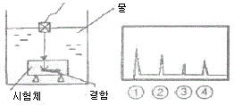
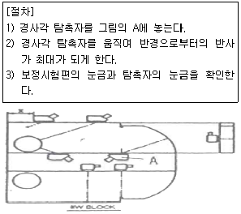
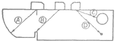

초음파비파괴검사산업기사(구) (2007-08-05 기출문제)
1과목: 초음파탐상시험원리
1. 자분탐상시험법에 대한 설명으로 틀린 것은?
- 모든 재료에 적용할 수 있다.
- 철강 재료가 자화되면 결함으로 인해 누설자속이 생긴다.
- 결함과 자속의 방향이 평행에 가까울수록 누설자속이 작아진다.
- 자화전류로 교류를 사용하면 표피효과에 의해 표면결함 검출에 유리하다.
(정답률: 알수없음)

2. X선 초점을 중심으로 하여 X선의 방출시 모든 방향으로 동일한 강도가 안 나오는 경우가 있다. 이를 무슨 효과라고 하는 가?
- 스크린(screen)효과
- 힐(heel)효과
- 위험각도(angle of emergence)효과
- 난시(astigmatism)효과
(정답률: 알수없음)
3. 재료마다 고유 음향임피던스가 존재한다. 음향임피던스 값은 재료의 밀도와 재료 내에서의 파의 속도를 곱한 값과 같다. 음파가 물에서 알루미늄 합금으로 수직하게 입사할 경우 음의 에너지 반사율은 약 몇 %인가? (단, 물의 음향임피던스 : 0.149 g/cm2ㆍμs, 알루미늄합금의 음향임피던스 : 1.72 g/cm2ㆍμs 이다.)
- 11.5%
- 29.4%
- 70.6%
- 88.6%
(정답률: 알수없음)
4. 매질 내에서 입자의 운동이 파의 진행방향과 평행일 때 송신되는 파를 무엇이라 하는가?
- 종파
- 횡파
- 판파
- 표면파
(정답률: 알수없음)
5. 감쇠량(dB)의 차이가 -14dB이었다면 신호크기(Amplitude)의 비는 약 얼마인가?
- 0.2
- 0.5
- 0.8
- 1
(정답률: 알수없음)
6. 종파가 아크릴에서 철강재로 경사 입사할 때 종파의 임계각은 약 얼마인가? (단, 아크릴에서 종파속도는 2600m/s이고, 철강재에서 종파속도는 6000m/s이다.)
- 26도
- 36도
- 46도
- 52도
(정답률: 알수없음)
7. 수침법에서 탐촉자의 근거리음장 효과를 없애려면 어떻게 하여야 하는가?
- 탐촉자 크기가 큰 것을 사용한다.
- 탐촉자 주파수를 증가 시킨다.
- 적절한 물거리를 사용한다.
- 초점 탐촉자를 사용한다.
(정답률: 알수없음)
8. 다음 중 초음파탐상시험에서 불감대에 영향을 미치는 인자가 아닌 것은?
- 펄스 반복 주파수
- 검사 주파수
- 펄스 길이
- 피검체에서의 음속
(정답률: 알수없음)
9. 용접부의 탠덤탐상에 대한 다음 설명 중 옳은 것은?
- 탠덤법은 2개의 탐촉자를 사용하므로 1탐촉자법에서와 같은 탐상불능 영역은 없다.
- 탠덤법은 후판의 루트 용입부족의 검출에 적합하다.
- 탠덤법은 개선 융합부족의 검출에 적합하다.
- 탠덤법은 판두께가 두꺼울수록 굴절각을 크게 하면 결함 검출능은 높아진다.
(정답률: 알수없음)
10. 적산효과(superimpose effect)에 대한 설명으로 옳은 것은?
- 재료내에서 종파가 횡파로 변환한 초음파에 의해 생긴 것이다.
- 수직탐상시 저면에코 보다 뒤에 나타난 결함에코가 누적되어 크게 나타나는 현상이다.
- 적산효과가 나타났을 때 결함의 평가는 결함에코간의 진폭을 비교하여 평가한다.
- 적산효과는 잔류 에코의 일종으로 고려된다.
(정답률: 알수없음)
11. 초음파탐상기를 이용하여 두께측정을 할 때 초기조정에 필요한 것이 아닌 것은?
- 영점 조정
- 시간축 조정
- 게인 조정
- 펄스폭 조정
(정답률: 알수없음)
12. 음향 이방성이 있는 재료를 초음파탐상할 때의 설명으로 틀린 것은?
- 강재 중에서 초음파의 음속이나 감쇠 등의 초음파전파 특성이 탐상방향에 따라 다른 재료를 음향이방성을 갖는 재료라 부른다.
- 압연강판과 같이 주 압연방향(L방향)과 이것에 직각인 방향(C방향)사이에 초음파 전파특성이 현저히 다른 재료에는 음향 이방성에 대한 점검이 필요하다.
- 음향 이방성을 갖는 재료의 탐상에는 공칭 굴절각이 70°인 탐촉자를 사용한다.
- 음속비의 측정에 의해 음향 이방성을 점검할 경우 음속비가 1.02를 넘을 때 음향 이방성이 있는 것으로 간주한다.
(정답률: 알수없음)
13. 수직탐상에 의한 초음파탐상시험시 주의해야 할 내용으로 옳은 것은?
- 고분해능 탐촉자를 사용하면 조직이 미세한 재료의 탐상에서는 임상에코가 많이 나타난다.
- 감쇠가 심한 재료에는 낮은 주파수가 적합하다.
- 탐상면에 가까운 결함 검출에는 직경이 크고, 낮은 주파수가 적합하다.
- 탐상면이 거칠 때에는 폰은 주파수를 선택한다.
(정답률: 알수없음)
14. 다음 중 교류가 흐르는 코일을 전도체에 가까이 하면 코일 주위에 발생된 자계가 도체에 작용하여, 도체를 관통하는 자속의 변화를 방해하려는 기전력 변화를 이용한 검사방법은 무엇인가?
- 전류관통법
- 축통전법
- 와전류탐상검사법
- 자분탐상코일법
(정답률: 알수없음)
15. 다음 중 초음파탐상시 탐상결과에 미치는 영향이 가장 적은 것은?
- 시험체의 표면이 거친 경우
- 결정 입자의 크기가 큰 경우
- 시험편의 두께가 일정한 경우
- 시험체의 탐상 표면과 저면이 평행하지 않은 경우
(정답률: 알수없음)
16. 내부결함 검출에 대한 설명으로 옳은 것은?
- 내부결함 검출에 적합한 방법은 주로 자분탐상시험과 와전류탐상시험 등이다.
- 직접촬영법에 의한 방사선투과시험법은 건전부와 결함부에서 굴절차로 생기는 필름상의 농도차를 이용한다.
- 펄스반사법에 의한 초음파탐상시험은 결함에 의한 초음파의 반사현상을 이용한다.
- 방사선투과시험은 면상결함이 주 검출 대상이다.
(정답률: 알수없음)
17. 주파수 2.25㎒, 진동자의 직경 10㎜의 탐촉자로 강재를 검사할 때 초음파 빔의 분산각은 약 얼마인가? (단, 강재의 음속은 5900m/s이다.)
- 12.66°
- 14.76°
- 16.76°
- 18.66°
(정답률: 알수없음)
18. 초음파 탐상시 피검재의 표면 거칠기가 감도 및 분해능 저하의 원인이 된다. 이를 줄이기 위한 방법으로 옳지 않은 것은?
- 표면을 매끄럽게 한다.
- 탐상기의 게인을 올린다.
- 초음파 출력이 낮은 탐촉자를 사용한다.
- 탐촉자에 표면 보호막을 사용하여 검사체와의 접촉을 개선한다.
(정답률: 알수없음)
19. 다음 탐촉자 중 진동자의 두께가 가장 두꺼운 것은?
- 1㎒ 탐촉자
- 2.25㎒ 탐촉자
- 5㎒ 탐촉자
- 10㎒ 탐촉자
(정답률: 알수없음)
20. 어떤 시험체를 대상으로 초음파탐상검사를 실시할 때, 동일한 주파수라면 횡파가 종파보다 작은 결함을 탐지하는데 유리하다. 그 이유는?
- 횡파의 파장이 종파에 비해 짧기 때문
- 횡파는 종파에 비해 분산각이 작기 때문
- 횡파가 종파에 비해 감쇠가 작기 때문
- 횡파의 음압이 종파에 비해 크기 때문
(정답률: 알수없음)
2과목: 초음파탐상검사
21. A스캔 장비의 스크린에서 저면반사파의 강도(음압)를 나타내는 것은?
- 반사파의 폭
- 반사파의 밝기
- 반사파의 거리
- 반사파의 높이
(정답률: 알수없음)
22. 다음 중 초음파 탐상기의 송신부의 기능은?
- 송신의 초음파 펄스를 만든다.
- 송신 펄스의 증폭을 행한다.
- 송신의 전압 펄스를 만든다.
- 전기로부터 초음파를 만든다.
(정답률: 알수없음)
23. 초음파탐상검사를 원리에 의해 분류할 때 이에 해당되지 않는 것은?
- 펄스반사법
- 투과법
- A주사법
- 공진법
(정답률: 알수없음)
24. 초음파탐상검사시 탐촉자의 진동자 두께와 주파수와의 관계를 옳게 설명한 것은?
- 두께와는 전혀 무관하다.
- 얇을수록 높은 주파수를 발생한다.
- 두꺼울수록 높은 주파수를 발생한다.
- 종파는 두꺼울수록, 횡파는 얇을수록 높은 주파수를 발생한다.
(정답률: 알수없음)
25. 수침법에서 경사진 시험편을 검사할 때 시편은 어떻게 놓아야 하는가?
- 전체에 걸쳐 수위가 일정하도록 한다.
- 물거리가 최대가 되도록 한다.
- 표면에서 입사각이 15°가 되도록 탐촉자를 고정시킨다.
- 표면에서 입사각이 5°가 되도록 탐촉자를 고정시킨다.
(정답률: 알수없음)
26. 다음 중 굴절각 70°에서 판두께 15㎜의 빔진행거리에 대한 설명으로 옳은 것은?
- 1skip 빔진행거리는 약 50㎜ 이다.
- 1skip 빔진행거리는 약 90㎜ 이다.
- 1skip 빔진행거리는 약 100㎜ 이다.
- 1skip 빔진행거리는 약 120㎜ 이다.
(정답률: 알수없음)
27. 시험체 두께가 t인 강재에 대하여 전몰 수직 수침초음파탐상검사를 할 때 최소한의 물거리로 가장 적당한 것은?
- t 이상
 이상
이상 이상
이상 이상
이상
(정답률: 알수없음)
28. 스크린 상에 높이가 낮은 지시파가 아주 많이 나타났을 때 (Hash 현상) 그 원인은 대개 무엇에 의한 것인가?
- 균열
- 큰 개재물
- 시험편 재질의 입자가 조대
- 기공
(정답률: 알수없음)
29. 단조품의 초음파탐상검사에 적용되는 저면에코방법에 대한 설명으로 옳은 것은?
- 표면 거칠기의 보정이 필요하다.
- 시험체 곡률의 보정이 필요하다.
- 충분한 저면에코가 얻어지는 형태에서만 적용이 가능하다.
- 결함의 길이 측정이 어렵다.
(정답률: 알수없음)
30. 관재의 탐상을 직접 접촉법으로 수행하는 방법의 설명으로 틀린 것은?
- 탐촉자 전면에 아크릴 슈(Shoe)를 관재의 곡면과 동일하게 가공해 부착한다.
- 관지름이 200㎜가 넘는 경우에는 탐촉자를 탐촉면의 곡면에 맞출 필요가 없다.
- 탐상면과 탐촉자 전면 사이의 틈에 흐르는 물로 채워(국부수침법) 검사한다.
- 탐촉자의 접촉면을 시험재 곡면에 맞춘다.
(정답률: 알수없음)
31. 종파속도가 5920㎧인 강재를 수직탐상할 때, 빔진행거리 25㎜의 위치에서 결함A가 검출되고, 빔진행거리가 50㎜ 위치에서 결함B가 검출되었다. 다음 중 설명이 옳은 것은?
- 시험체 표면에서 결함A까지의 거리는 시험체 표면에서 결함B까지 거리의 2배이다.
- 감쇠에 의해 종파속도가 변화하므로 시험체 표면에서 결함B까지의 거리는 결함A까지의 거리와 같다.
- 시험체 표면에서 결함A까지의 거리는 시험체 표면에서 결함B까지 거리의 1/2이다.
- 감쇠에 의해 종파속도가 변화하기 때문에 시험체 표면에서 결함B까지의 거리는 결함A 거리의 4배이상 먼 곳에 있다.
(정답률: 알수없음)
32. 용접부의 경사각탐상에 관한 설명으로 옳은 것은?
- 내부 용입불량과 측면 루트부의 용입불량은 결함의 크기가 같으면 에코높이는 거의 같게 된다.
- 같은 탐상면에서 탐상하면 모든 용접부의 결함은 1회 반사법보다 직사법이 에코높이가 더 높게 나타난다.
- 면상균열은 초음파가 결함에서 입사각이 변하면 에코높이는 현저하게 변화한다.
- 융합불량은 형상이 복잡하기 때문에 에코높이는 균열보다 매우 크게 나타난다.
(정답률: 알수없음)
33. 펄스반사식 초음파 탐상기에서 시간축을 만들어 내는 부분은 어느 곳인가?
- 펄스발생기
- 소인회로
- 수신기
- 동기장치
(정답률: 알수없음)
34. 수직탐촉자와 비교하였을 때 경사각탐촉자 만이 갖는 특유한 성능에 해당하는 것은?
- 감도
- 분해능
- 수신기
- 불감대
(정답률: 알수없음)
35. [그림]과 같이 수침법으로 시험체를 검사하여 도면과 같은 탐상도형이 CRT에 나타났다. 시험체 내부결함의 반사지시는 CRT상에서 어느 것인가?

- ①
- ②
- ③
- ④
(정답률: 알수없음)
36. 거리증폭 보상(DAC)회로의 역할은?
- 탐상기의 증폭 오차를 감소시키는 것이다.
- 시험체내에서의 감쇠에 대한 보상회로이다.
- CRT화면의 시간에 대한 보상회로이다.
- 시험체에서의 거리와 CRT화면의 시간을 동조시키는 것이다.
(정답률: 알수없음)
37. 탐촉자의 진동자 재질 중 물에 녹기 쉬워, 수침법 사용시 방수에 주의해야 하는 것은?
- 수정
- 지르콘티탄산납
- 황산리튬
- 니오브산리튬
(정답률: 알수없음)
38. [그림]과 다음의 [절차] 내용은 무엇에 대한 설명인가?

- 굴절각 측정
- 분해능 측정
- 거리진폭 교정
- 입사점 측정
(정답률: 알수없음)
39. 경사각탐상에 있어서 A1 시험편을 이용하여 A1감도를 측정하려고 한다. 그림에서 어느 부분을 이용하는가?

- ⓐ
- ⓑ
- ⓒ
- ⓓ
(정답률: 알수없음)
40. 지름이 작고 긴 봉강을 길이 방향에서 종파로 초음파탐상검사할 때 1차 저면 반사파(B1)와 2차 저면 반사파(B2)사이에 나타나는 간섭 파형은 무엇 때문에 일어나는가?
- 잡음
- 전기적 간섭 신호
- 표면파
- 파형변이
(정답률: 알수없음)
3과목: 초음파탐상관련규격 및 컴퓨터활용
41. 강 용접부의 초음파탐상 시험방법(KS B 0896)에서 규정된 경사각 탐촉자의 공칭주파수와 진동자의 공칭치수가 아닌 것은?
- 2㎒, 14×14㎜
- 2㎒, 20×20㎜
- 5㎒, 10×10㎜
- 5㎒, 20×20㎜
(정답률: 알수없음)
42. 초음파탐상 시험용 표준시험편(KS B 0831)에 의한 G형 표준시험편의 사용목적에 해당되지 않는 것은?
- 탐상감도의 조정
- 탐상기의 종합 성능 측정
- 수직 탐촉자의 특성 측정
- 경사각 탐촉자의 특성 측정
(정답률: 알수없음)
43. 강 용접부의 초음파탐상 시험방법(KS B 0896)에 따라 탐상시험시 사용하는 경사각탐촉자의 입사점 및 굴절각을 조정 및 점검하는 시기는?
- 작업개시시 및 작업시간 4시간이내 마다
- 작업개시시 및 작업시간 8시간이내 마다
- 작업종료시 및 작업시간 10시간이내 마다
- 작업종료시 및 작업시간 12시간이내 마다
(정답률: 알수없음)
44. 복원중(문제 오류로 복원중입니다. 정확한 내용을 아시는 분께서는 오류신고를 통하여 내용 작성 부탁 드립니다. 정답은 1번입니다.)
- 복원중(정확한 보기 내용을 아시는분께서는 오류 신고를 통하여 내용 작성부탁 드립니다.)
- 복원중(정확한 보기 내용을 아시는분께서는 오류 신고를 통하여 내용 작성부탁 드립니다.)
- 복원중(정확한 보기 내용을 아시는분께서는 오류 신고를 통하여 내용 작성부탁 드립니다.)
- 복원중(정확한 보기 내용을 아시는분께서는 오류 신고를 통하여 내용 작성부탁 드립니다.)
(정답률: 알수없음)
45. 강 용접부의 초음파탐상 시험방법(KS B 0896)에 따라 탠덤탐상하는 경우 탐상장치의 조정 및 점검시기는?
- 작업시간 4시간이내 마다
- 작업시간 6시간이내 마다
- 작업시간 8시간이내 마다
- 작업시간 1주일이내 마다
(정답률: 알수없음)
46. 아크 용접 강관의 초음파탐상 검사방법(KS D 0252)에 규정된 자동탐상에 의한 탐상형식이 아닌 것은?
- 갭법
- 수침법
- 공진법
- 직접 접촉법
(정답률: 알수없음)
47. 초음파탐상장치의 성능 측정방법(KS B ⑤34)에서 분해능 시험편으로 사용하지 않는 것은?
- RB-RA
- RB-RB
- RB-RC
- RB-RE
(정답률: 알수없음)
48. 강 용접부의 초음파탐상 시험방법(KS B S 0896)에 규정된 H선과 L선의 dB차이는 얼마인가?
- 6dB
- 10dB
- 12dB
- 20dB
(정답률: 알수없음)
49. 보일러 및 압력용기의 용접부에 대한 초음파탐상검사(ASME Sec.V, Art.4)에 따른 수동탐상시험 주사 속도(㎜/s)는 특별한 규정이 없는 경우 최고 얼마로 제한하고 있는가?
- 152
- 304
- 476
- 608
(정답률: 알수없음)
50. 다음은 보일러 및 압력용기의 용접부에 대한 초음파탐상검사(ASME Sec.V, Art.4)에 따라 수직탐상할 때 설정하는 거리진폭교정곡선의 절차에 대한 설명으로 틀린 것은?
- 기본 교정시험편의 구멍에서 나오는 진폭 중 가장 높은 지점을 찾는다.
- 가장 높은 진폭이 나오는 구멍에서 최대 응답을 주는 위치에 탐촉자를 위치시킨다.
- 전스크린 높이의 80%가 되도록 감도를 조종한다.
- 가장 높은 지점의 지시값과 다른 한 구멍의 최대 지시값의 1/2 되는 부분을 스크린에 표시, 선으로 연결한다.
(정답률: 알수없음)
51. 압력용기용 알루미늄 합금판에 대한 초음파탐상시험(ASME Sec.V Art.23 SB 548)에서 검사 후 합격된 제품에는 어떤 글자의 도장을 찍는가?
- A
- P
- U
- O
(정답률: 알수없음)
52. 건축용 강판 및 평강의 초음파탐상시험에 따른 등급분류와 판정기준(KS D 0040)에 따라 강판을 탐상할 경우 탐상부위로 옳은 것은?
- 200㎜ 피치의 압연 방향 선을 탐상선으로 한다.
- 200㎜ 피치의 압연 방향과 수직인 선을 탐상선으로 한다.
- 100㎜ 피치의 압연 방향 선을 탐상선으로 한다.
- 100㎜ 피치의 압연 방향과 수직인 선을 탐상선으로 한다.
(정답률: 알수없음)
53. 보일러 및 압력용기에 대한 대형단강품의 초음파탐상검사(ASME Sec.V, Art.23 SA 388)에서 두께가 두꺼운 단조품을 탐상시 직접 접촉방법일 때 허용되는 검사표면의 최대 표면거칠기는 얼마인가?
- 1㎛
- 3㎛
- 6㎛
- 12㎛
(정답률: 알수없음)
54. 보일러 및 압력용기의 용접부에 대한 초음파탐상검사(ASME Sec.V, Art.4)에서 규정하고 있는 탐상장치의 스크린높이 직선성은 교정된 스크린 높이의 20~80%에서 전 스크린 높이의 몇 %이내의 직선성을 나타낼 수 있어야 하는가?
- ±5%
- ±10%
- ±15%
- ±20%
(정답률: 알수없음)
55. 보일러 및 압력용기의 재료에 대한 초음파탐상검사(ASME Sec.V, Art.5)에서 규정하고 있는 탐상장치의 점검과 교정시기가 잘못 설명된 것은?
- 검사의 시작전후
- 검사자가 교체되었을 때
- 장치기능의 오류가 의심될 때
- 탐상장치는 적어도 8시간마다 점검
(정답률: 알수없음)
56. 뉴스그룹으로서 특정주제에 대한 정보를 주고받는 일종의 게시판형식의 인터넷 서비스는?
- BBS
- Gopher
- Usenet
- Telnet
(정답률: 알수없음)
57. 제어프로그램 중 다양한 종류의 데이터 포맷과 파일을 체계적으로 관리해 주는 프로그램은?
- 감시 프로그램(Supervisor Program)
- 작업관리 프로그램(Job Management Program)
- 문제처리 프로그램(Problem Processing Program)
- 데이터관리 프로그램(Data Management Program)
(정답률: 알수없음)
58. 서로 다른 네트워크 구조 및 프로토콜 간을 연결해 주는 장치는?
- 방화벽
- 하이퍼텍스트
- 계정
- 게이트웨이
(정답률: 알수없음)
59. 도메인의 분류 중 교육기관을 의미하는 것은?
- com
- gov
- edu
- net
(정답률: 알수없음)
60. 사용자로 하여금 모아놓은 여러 개의 검색엔진들 중 원하는 검색엔진 하나를 선택해서 검색할 수 있는 것은?
- 메타 검색엔진
- 키워드형 검색엔진
- 디렉토리형 검색엔진
- 로봇 에이전트형 검색엔진
(정답률: 알수없음)
4과목: 금속재료 및 용접일반
61. 정격 2차 전류가 200A, 정격사용율 40%인 용접기의 용접전류 150A로 아크 용접을 할 대 허용사용률(%)은 약 얼마인가?
- 53.3
- 60.0
- 71.1
- 90.0
(정답률: 알수없음)
62. 다음 용접의 분류 중 저항용접에 해당하는 것은?
- 아크 용접
- 업셋 맞대기 용접
- 원자수소 용접
- 와이어 아크 용접
(정답률: 알수없음)
63. 다음 중 점용접의 3대요소가 아닌 것은?
- 전극의 재질
- 용접 전류
- 통전 시간
- 가압역
(정답률: 알수없음)
64. 다음 용접 결함 중 구조상의 결함이 아닌 것은?
- 균열 발생 방지
- 아크 쏠림 방지
- 용접 속도 증가
- 용접봉 절약
(정답률: 알수없음)
65. 복원중(문제 오류로 복원중입니다. 정확한 내용을 아시는 분께서는 오류신고를 통하여 내용 작성 부탁 드립니다. 정답은 1번입니다.)
- 복원중(정확한 보기 내용을 아시는분께서는 오류 신고를 통하여 내용 작성부탁 드립니다.)
- 복원중(정확한 보기 내용을 아시는분께서는 오류 신고를 통하여 내용 작성부탁 드립니다.)
- 복원중(정확한 보기 내용을 아시는분께서는 오류 신고를 통하여 내용 작성부탁 드립니다.)
- 복원중(정확한 보기 내용을 아시는분께서는 오류 신고를 통하여 내용 작성부탁 드립니다.)
(정답률: 알수없음)
66. 피복 아크 용접봉의 용융속도에 대해 설명한 것 중 맞는 것은?
- 아크 전압에 비례한다.
- 아크 전류에 비례한다.
- 용접봉의 직경과 전압의 곱에 비례한다.
- 아크 전류와 전압에 반비례한다.
(정답률: 알수없음)
67. 가스용접시 사용되는 산소용기에 표시하는 사항이 아닌 것은?
- 충전가스의 명칭
- 용기 재질
- 용기의 내압시험 압력
- 용기 제조자의 용기번호 및 제조번호
(정답률: 알수없음)
68. 플러그 용접에 대한 설명으로 가장 적합한 것은?
- 2개 부재 사이의 휨 부분을 용접하는 이음 방법
- 접합하려고 하는 한쪽의 부재에 둥근 구멍을 뚫고 그 곳에 용접하여 이음하는 방법
- 동일 평면에 있는 2개의 부재를 마주 붙여 용접하는 이음방법
- 고 진공 중에서 고속 전자 빔에 의한 충격 발열을 이용하여 용접하는 방법
(정답률: 알수없음)
69. 이산화탄소 아크 용접시에 스패터가 많이 발생하는 원인이 아닌 것은?
- 용접 조건의 부적당
- 1차 입력전압의 불균형
- 직류 리액터의 탭 불량
- 이음 형상의 불량
(정답률: 알수없음)
70. 용접 구조물의 용접 순서는 수축변형에 크게 영향을 주며 잔류응력 및 구속응력에도 영향을 준다. 용접순서의 일반적인 원칙이 아닌 것은?
- 수축량이 큰 것은 먼저 용접하고 수축량이 적은 것은 나중에 용접한다.
- 좌ㆍ우는 될 수 있는 대로 중심에 대칭이 되도록 용접한다.
- 긴 용접부는 끝단에서 중앙부로 동시에 용접한다.
- 동일 평면 내에 이음이 많을 경우 수축은 가능한 자유단으로 보낸다.
(정답률: 알수없음)
71. 표점거리의 길이가 50㎜인 재료를 인장시험 후 측정하였더니 55㎜가 되었을 때, 이 재료의 연신율(%)은?
- 9
- 10
- 15
- 18
(정답률: 알수없음)
72. 냉간 가공한 금속을 풀림(annealing)하였을 때 내부조족의 변화를 순서대로 나열한 것은?
- 재결정 → 회복 → 결정립 성장
- 결정립 성장 → 재결정 → 회복
- 회복 → 결정립성장 → 재결정
- 회복 → 재결정 → 결정립 성장
(정답률: 알수없음)
73. 다음 중 초경합금에 대한 설명으로 가장 관계가 먼 것은?
- 경도가 높다.
- 내모마성 및 압축강도가 높다.
- 고온경도 및 강도는 양호하나 고온에서 변형이 크다.
- WC분말에 TiC, TaC, 및 Co분말 등을 첨가하여 제조한다.
(정답률: 알수없음)
74. 탄성구역에서 변형은 세로방향에 연신이 생기면 가로방향에 수축이 생기는데 각 방향의 치수변화의 비를 무엇이라 하는 가?
- 강성률의 비
- 포아송의 비
- 탄성률의 비
- 전단변형량의 비
(정답률: 알수없음)
75. 베어링에 사용되는 구리합금의 대표적인 켈밋(kelmet)의 주성분은?
- 70%Cu-30%Pb 합금
- 70%Pb-30%Mg 합금
- 60%Cu-40%Zn 합금
- 60%Pb-40%Ti 합금
(정답률: 알수없음)
76. 다음 중 형상기억합금에 대한 설명을 틀린 것은?
- 특정한 모양의 것을 인장하여 탄성한도를 넘어서 소성 변형시킨 경우에도 하중을 제거하면 원상태로 돌아가는 현상
- 주어진 특정모양의 것을 인장하거나 소성 변형된 것이 가열에 의하여 원래의 모양으로 돌아가는 현상
- Ti-Ni합금은 형상 기억효과가 있다.
- 냉각시의 유기 마텐자이트 변태가 일어난다.
(정답률: 알수없음)
77. 다음 중 Ni과 Al의 주된 슬립면으로 옳은 것은?
- {100}
- {110}
- {111}
- {0001}
(정답률: 알수없음)
78. 주철에서 접종처리하는 목적으로 틀린 것은?
- chill화 방지
- 흑연형상의 개량
- 기계적 성질향상
- 질량효과의 증가
(정답률: 알수없음)
79. 내식성이 좋고 비자성체이며, 오스테나이트 조직을 갖는 스테인리스강은?
- 3%Cr 스테인리스강
- 35%Cr 스테인리스강
- 18%Cr-8%Ni 스테인리스강
- 석출경화형 스테인리스강
(정답률: 알수없음)
80. 다음 중 황동의 자연 균열 방지책으로 틀린 것은?
- 도료칠
- 아연도금
- 저온응력 풀림
- 암모니아분위기 조성
(정답률: 알수없음)